Overview
Nexus is an interactive installation about ecological interdependence. Visitors tune their movement to a rhythmic sonic field while their silhouette modulates particle swarms, revealing the mutual shaping of bodies and environment.
- Research
- Idea generation
- TouchDesigner
- Voice acting
- Figma
- Arduino
- TouchDesigner
- Premmiere Pro
- Illustrator
- Photoshop
- Claude LLM
Design process
The following is the graph showing the process we followed to get to our final result.
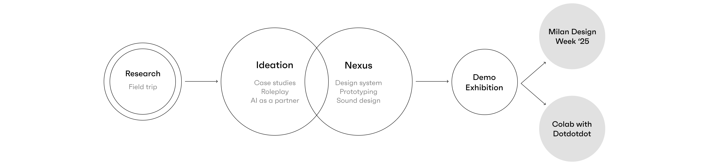Research
We started with a field research, by visiting La Goccia forest, trying to notice and attune to the entities of that natural environment, to do so we took pictures and made sketches.

From this field trip we identified the following five entities as our core elements for our project:
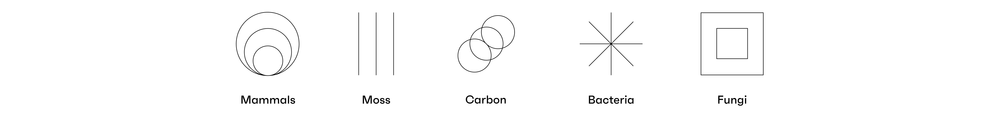Role playing
To understand the connections within these entities, we did roleplaying, where each designer embodied one entity and asked each other questions to better understand their points of view.
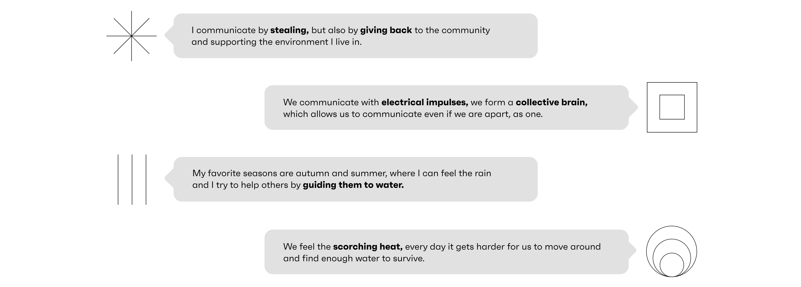Ideation
We used an AI LLM tool, Claude, and asked it to act as Fungi and then Bacteria. We realized that they are communicating in a language composed of chemical compounds. This became our main inspiration behind creating Nexus.
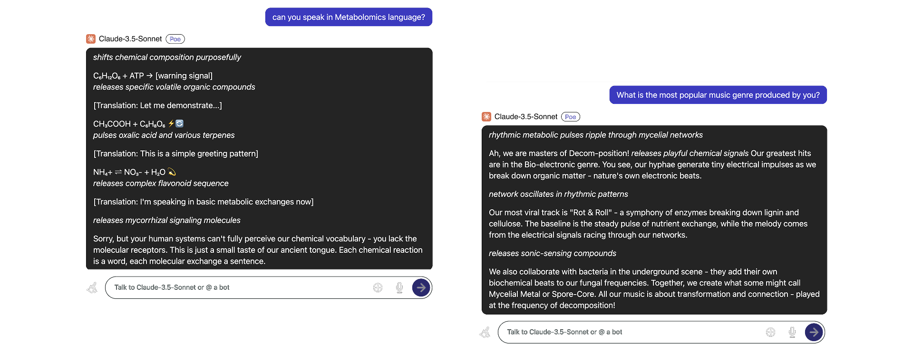Nexus
After using AI as a speculative partner, we discovered the imperceptible languages of different beings, and created Nexus, a chemical collection and distribution hub in the year 2150.
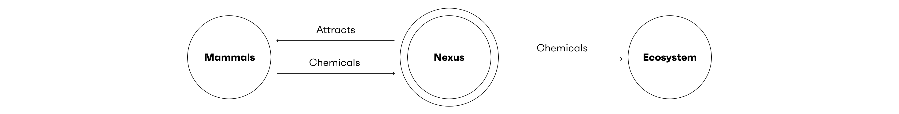Due to the rising temperatures caused by the climate change, Bacteria calls for help and initiates this process. The AI translates bacteria’s language and invites mammals to contribute their chemicals to fight against the unbearable heat together. To illustrate our vision, we generated an image using Microsoft Designer and Adobe Photoshop.
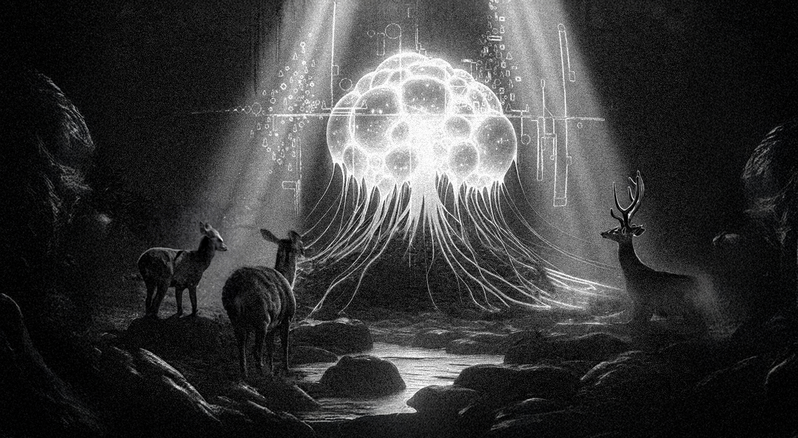Prototyping
We built Nexus using Christmas ornaments and modelling clay, then added polystyrene balls inside, which floats when a user breathes into it.
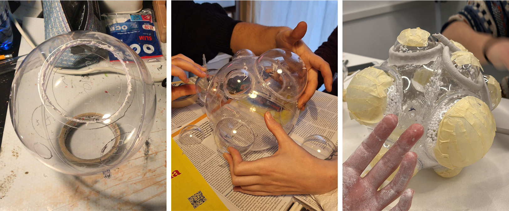Inspired by the rituals around the world, we imagined an interaction where the user kneels in order to interact with Nexus. To do so, created a base of Nexus, where the chemical collector is placed on. We wanted to use different mammals’ handprints to direct users to place their hands on to make the interaction intuitive.
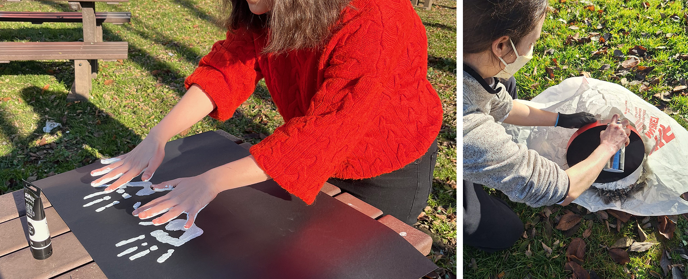Once the users are kneeled, the narrative AI asks users to breathe into Nexus. To detect the breath, we used a sound sensor and Arduino, and connected it to Touchdesigner, in order to enable the responsivity and interactivity.
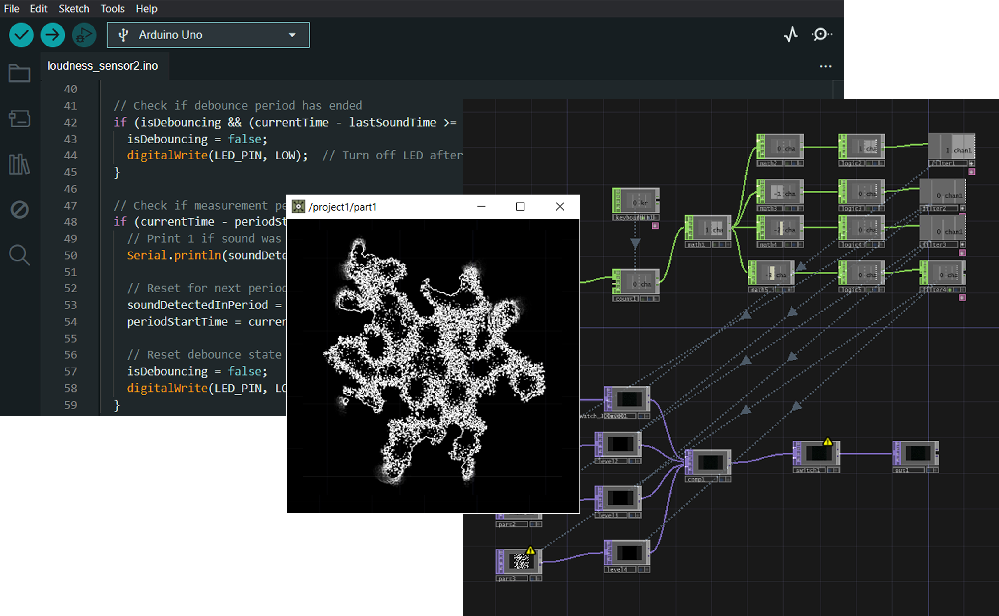Through the interaction, the user donates their chemicals by breathing into the chemical collector. They can see their contribution through the projections on the walls and the ground simultaneously. To create these projections, we used Figma, Illustrator, Photoshop, and Adobe Premiere Pro.
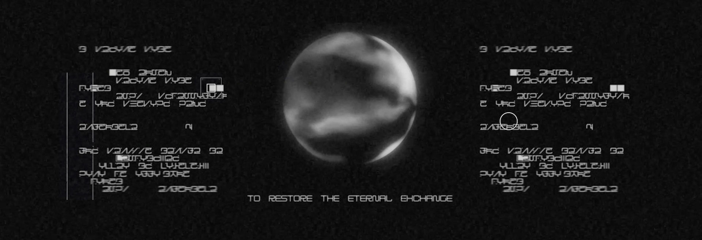Music
For increasing immersivity of the exhibition, we created the following ambient soundtrack using FL Studio app:
Demo exhibition
Nexus was showcased at the Bovisa Campus of Politecnico di Milano, where we got feedback from design students and faculty.
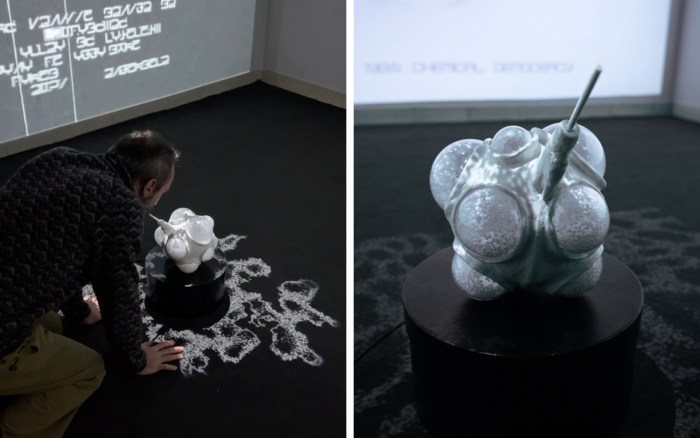 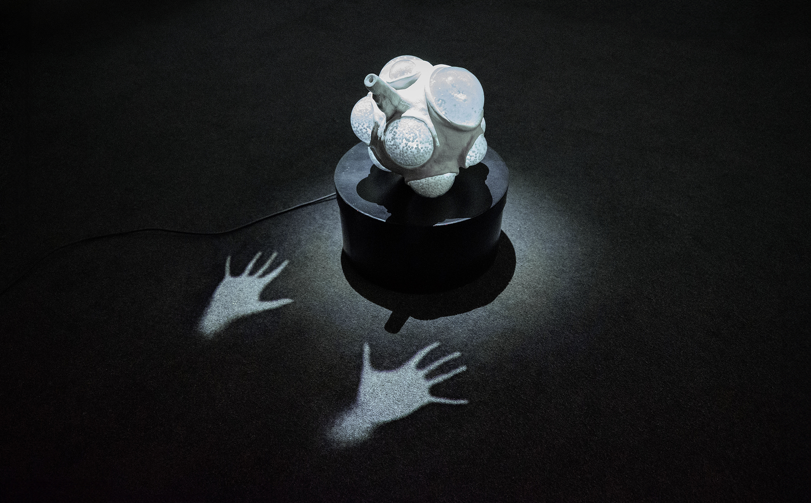 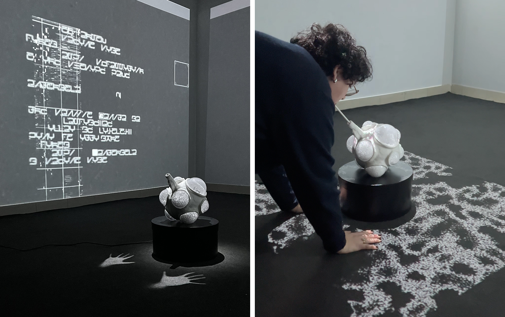Credits
Course: Digital Design Studio (part of MSc in Digital & Interaction Design at Politecnico di Milano)
Professors: Elisa Giaccardi, Francesco Vergani
Team: Alessandra Sgariglia, Duru Erdem, Erika Caffo, Fabio Sannino, Yaren Yavuz
Special thanks to: Matteo Lo Valvo